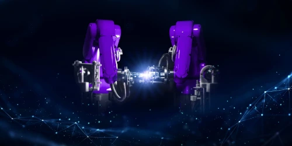

Founded in 2018 by engineers from Stanford, MIT, and Google, UnitX is a robotics company committed to revolutionizing AI-powered visual inspection in manufacturing. UnitX system delivers the industry-best in accuracy inline inspection, fastest deployment, and adaptability, tackling the most complex inspection challenges across diverse production environments.
UnitX delivers best-in-class accuracy and the fastest-to-deploy inline inspection systems in the industry. These priorities have empowered our customers to achieve unparalleled quality control while reducing scrap rate and costs. With UnitX's systems deployed globally, our solutions now inspect more than $6.1 billion worth of products annually, transforming quality control across industries. We're proud to have served over 190 customers to date.